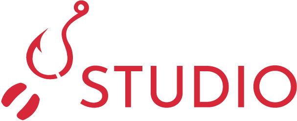

Audiohook is the first audio recording software to prioritise narrative organisation.
Designed for audiobooks, radio plays, video games, animated scripts, and similar projects that require highly categorised audio.
Every tool to get from a raw manuscript to a compiled master track, built for narrators and creators to focus their time on what matters.
Add your document to have it split into chapters/scenes, then into sentences to freely split and join into organised segments.
Add speakers or auto-detect them from dialogue tags (beta). Organise your characters, add aliases, director's notes, and colours for easy identification during recording.
Narrate each sentence or segment on a dedicated recording surface. Keep unlimited organised recordings to make sure you never lose that perfect take.
Apply audio effects presets per line, or assign optional third-party STS voices to characters for video games, animations, or radio plays to bring small projects to life.
Measure each take against the ACX band with true BS.1770 integrated LUFS, re-record only what is required, and export standardised finals with confidence.
Assemble every take into scenes. Audio is processed in 32-bit float and stays lossless 24-bit throughout, with WAV, FLAC, MP3 and M4B delivery options.
The same line, the same microphone, the same room - recorded through Adobe Audition and Audiohook. Download the original files to check the fingerprints through ffprobe, ExifTool or MediaInfo.
| How the workflow compares | Audacity | Adobe Audition | REAPER | Audiohook |
|---|---|---|---|---|
| Punch-and-roll recording | ✓ | ✓ | ✓ | ✓ |
| Manuscript as the interface | — | — | script it yourself | ✓ built in |
| Character-aware dialogue | — | — | — | ✓ |
| Takes managed per line | — | — | ✓ take lanes | ✓ per segment takes |
| Per-clip effect chains | macros, destructive | ✓ clip FX rack | ✓ item FX | ✓ Dialogue Studio |
| Audio restoration | ✓ with plugins | ✓ best-in-class | via plugins | ✓ room tone + declick |
| External-editor round-trip | — | — | ✓ per item | ✓ saves return as takes |
| LUFS tools | ✓ built in | ✓ Match Loudness | via SWS extension | ✓ built in |
| Per-take ACX verdict + one-click compliance | plugin, per file | — | — | ✓ |
| Separate-file batch export | ✓ by labels | from markers | ✓ region matrix | ✓ zip · WAV/FLAC/MP3 + manifest |
| Caption (SRT) export | labels to .txt | via Premiere | community scripts | ✓ line + word level |
| Scene video within timeline | — | ✓ video track | ✓ video window | ✓ locked to playhead |
| Speech-to-speech voices (optional) | — | — | — | ✓ |
| Price | free · open source | subscription | $60 license | free · open source |
In language education, the demand for the teacher's voice is insatiable. Whether it's scripts to help kids win competitions, spoken books that help students learn to read, audio for listening tests, conversation examples, or anything on the ever-growing list, one thing never changes: the battle of quality vs. time investment.
As a team of teachers and software developers, we've been aiming to solve this problem for a very long time. Starting as a basic line recorder where typed text can be recorded for export as named lines, our software has grown into something that could record more than just The Very Hungry Caterpillar. It became an exceptionally fast, multi-purpose workflow with a very high standard output, and we knew this was something that needed to be shared with everyone.
A Windows desktop app. Free and open source under the AGPL-3.0. The first public release is in final testing.

Windows 10 or 11 (64-bit)
Any input device; native WASAPI capture built in
Offline with optional API extensions
AGPL-3.0 · free to use, modify and share